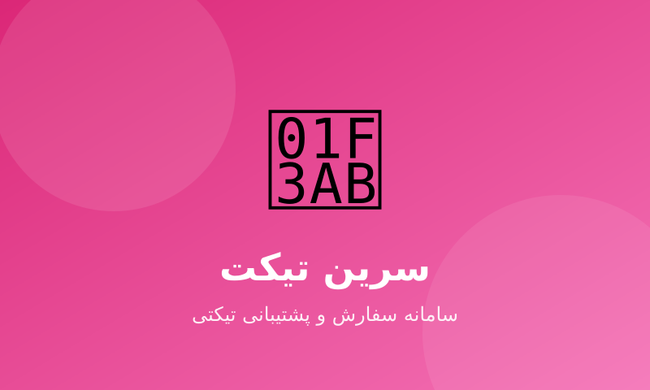

سامانهی سفارشگیری و پشتیبانی تیکتی با پنل کاربر و پنل ادمین مستقل، احراز هویت کامل و مدیریت سفارشها و تیکتها.

سرین تیکت یک سامانهی سبک و کاربردی برای ثبت سفارش و ارائهی پشتیبانی است که با Laravel و Livewire ساخته شده و تجربهی کاربری روانی برای کاربران و مدیران فراهم میکند.
این پروژه نشاندهندهی تسلط من بر ساخت سریع یک وباپ کامل با Livewire، ساختار روابط کاربری و مدیریت دسترسی است.